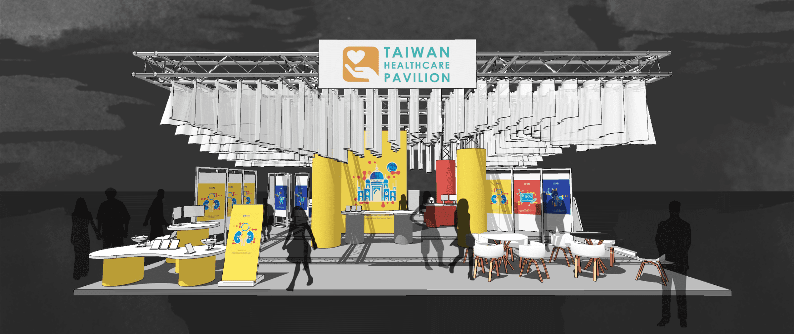
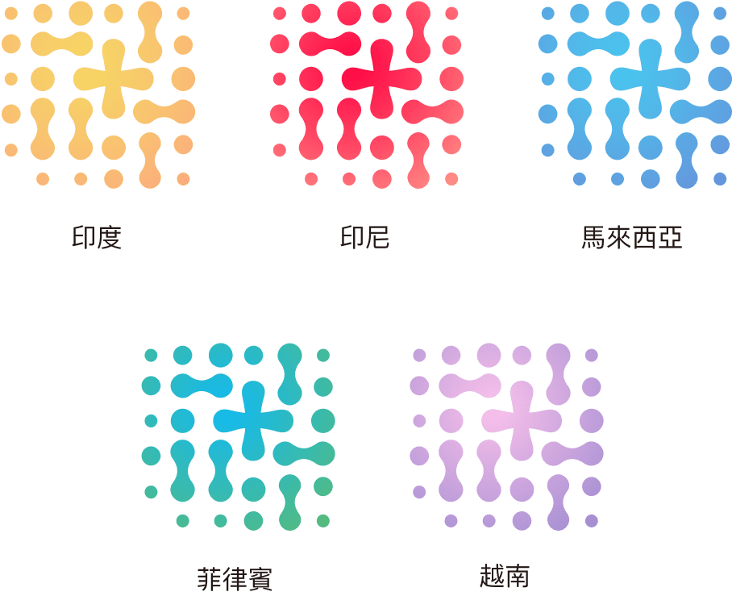
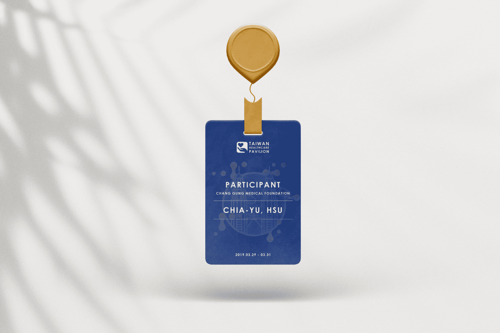
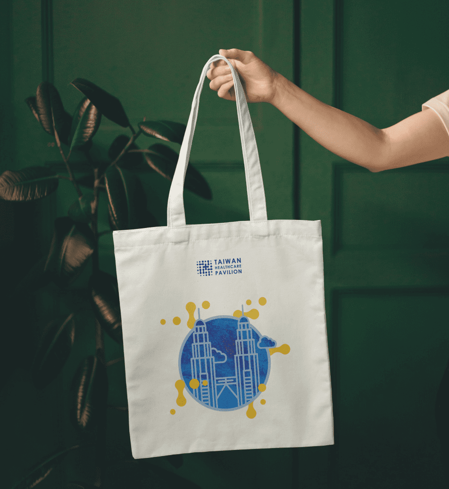

健康科技生活展主視覺
Type Visual Design 視覺設計 / Logo Design
2019年印度、越南、印尼、馬來西亞與菲律賓臺灣形象展及中國南亞東南亞國家商品展「臺灣健康產業形象館」展館設計提案，為五個國家設計以及三個醫療主題製作視覺設計與展覽識別Logo。
Project Background
2019年臺灣形象展設置之「臺灣健康產業形象館」將以「醫療科技，健康照護」為主軸，持續於新南向國家推廣臺灣優質的醫療技術與服務，切實地透過展覽、分享會、社群媒體等動靜態及線上線下的活動管道，深化交流，協助促進臺灣醫療健康產業在新南向國家建立供應鏈連結，獲取經貿合作機會及潛在商機。
Visual Pattern Design
採用醫療常見的十字為基礎來設計具質感、科技感、及延伸性的主視覺圖像，展現臺灣醫療服務與創新科技整合的多元延伸性，應用在展場風格與延伸設計上。
將主要視覺圖像搭配生動活潑的色彩來創造出臺灣醫療服務活躍多元的意象，運用特定色彩搭配創造出2019臺灣健康產業形象館於各國展覽之差異性與獨特性。

將主要視覺圖像搭配生動活潑的色彩來創造出臺灣醫療服務活躍多元的意象，運用特定色彩搭配創造出2019臺灣健康產業形象館於各國展覽之差異性與獨特性。
會展主視覺運用
Local Connection Visual Design
以感性的插畫元素描繪各國代表性的人文元素與標誌性建築，展現臺灣醫療「接地氣」態度與企圖心，搭配生動活潑的色彩來創造出東南亞各國及中國大陸之醫療服務具備活躍多元的發展潛力。


Main Theme Visual Design
跳脫以往對於醫療有距離及冰冷印象，以感性的插畫元素來詮釋臺灣智慧醫療「以病人為中心」，提供人性化、溫馨、及尊重的高品質與精緻的「智慧醫院」、「牙醫保健」、「血液透析系統」等智慧醫療服務。

Identity Design

